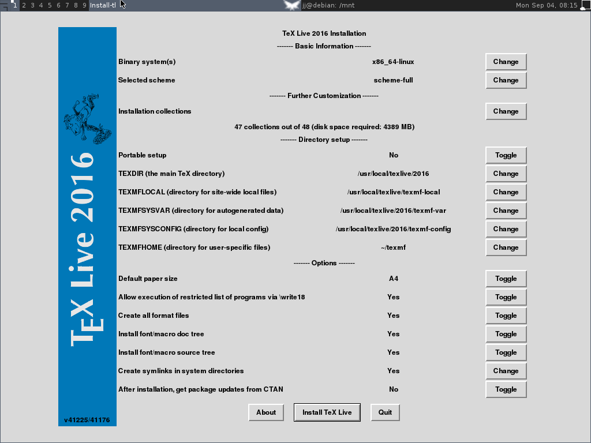

一些软件的安装与使用¶
sphinx安装与使用¶
- 初始化目录
sphinx-quickstart
- 语言选择
zh_CN
初始化时的选择:
jj@debian:~/SphinxWork/WingNut$ sphinx-quickstart Welcome to the Sphinx 1.6.3 quickstart utility. Please enter values for the following settings (just press Enter to accept a default value, if one is given in brackets). Enter the root path for documentation. > Root path for the documentation [.]: You have two options for placing the build directory for Sphinx output. Either, you use a directory "_build" within the root path, or you separate "source" and "build" directories within the root path. > Separate source and build directories (y/n) [n]: y Inside the root directory, two more directories will be created; "_templates" for custom HTML templates and "_static" for custom stylesheets and other static files. You can enter another prefix (such as ".") to replace the underscore. > Name prefix for templates and static dir [_]: The project name will occur in several places in the built documentation. > Project name: WingNut > Author name(s): zyj Sphinx has the notion of a "version" and a "release" for the software. Each version can have multiple releases. For example, for Python the version is something like 2.5 or 3.0, while the release is something like 2.5.1 or 3.0a1. If you don't need this dual structure, just set both to the same value. > Project version []: 1.0 > Project release [1.0]: 1.0 If the documents are to be written in a language other than English, you can select a language here by its language code. Sphinx will then translate text that it generates into that language. For a list of supported codes, see http://sphinx-doc.org/config.html#confval-language. > Project language [en]: zh_CN The file name suffix for source files. Commonly, this is either ".txt" or ".rst". Only files with this suffix are considered documents. > Source file suffix [.rst]: One document is special in that it is considered the top node of the "contents tree", that is, it is the root of the hierarchical structure of the documents. Normally, this is "index", but if your "index" document is a custom template, you can also set this to another filename. > Name of your master document (without suffix) [index]: Sphinx can also add configuration for epub output: > Do you want to use the epub builder (y/n) [n]: n Please indicate if you want to use one of the following Sphinx extensions: > autodoc: automatically insert docstrings from modules (y/n) [n]: y > doctest: automatically test code snippets in doctest blocks (y/n) [n]: y > intersphinx: link between Sphinx documentation of different projects (y/n) [n]: y > todo: write "todo" entries that can be shown or hidden on build (y/n) [n]: y > coverage: checks for documentation coverage (y/n) [n]: > imgmath: include math, rendered as PNG or SVG images (y/n) [n]: > mathjax: include math, rendered in the browser by MathJax (y/n) [n]: > ifconfig: conditional inclusion of content based on config values (y/n) [n]: > viewcode: include links to the source code of documented Python objects (y/n) [n]: y > githubpages: create .nojekyll file to publish the document on GitHub pages (y/n) [n]: A Makefile and a Windows command file can be generated for you so that you only have to run e.g. `make html' instead of invoking sphinx-build directly. > Create Makefile? (y/n) [y]: y > Create Windows command file? (y/n) [y]: y Creating file ./source/conf.py. Creating file ./source/index.rst. Creating file ./Makefile. Creating file ./make.bat. Finished: An initial directory structure has been created. You should now populate your master file ./source/index.rst and create other documentation source files. Use the Makefile to build the docs, like so: make builder where "builder" is one of the supported builders, e.g. html, latex or linkcheck.
latex配置,conf.py:
latex_elements = { # The paper size ('letterpaper' or 'a4paper'). # # 'papersize': 'letterpaper', # The font size ('10pt', '11pt' or '12pt'). # # 'pointsize': '10pt', # Additional stuff for the LaTeX preamble. # # 'preamble': '', 'preamble': ''' \\hypersetup{unicode=true} \\usepackage{CJKutf8} \\AtBeginDocument{\\begin{CJK}{UTF8}{gbsn}} \\AtEndDocument{\\end{CJK}} ''', # Latex figure (float) alignment # # 'figure_align': 'htbp', }
debian8安装texlive2016¶
1.为了使用图形化安装界面，需要安装perl的tk组件:
sudo apt-get install perl-tk
2.加载镜像文件:
sudo mount -o loop texlive2016.iso /mnt
- 3.启动安装程序的图形化界面进行配置
- cd /mnt sudo ./install-tl -gui
建议在最后的get package updates一项选否，等安装好了之后手动安装更新
4.完成后，卸载镜像文件:
cd /;
sudo umount /mnt
窗口管理器的使用¶
常用命令:
Mod4 + Left 切换到上一个Tag
Mod4 + Right 切换到下一个Tag
Mod4 + 1~9 切换到指定Tag
Mod4 + t 标记当前窗口
Mod4 + Ctrl + 1~9 把标记的窗口移动到指定桌面
Mod4 + Esc 切换到最后使用过的Tag
Mod4 + Ctrl + r 重启awesome
Mod4 + Ctrl + q 退出awesome
Mod4 + m 最大化/还原当前窗口
Mod4 + f 全屏/恢复当前窗口
Mod4 + Shift +c 关闭当前窗口
Mod4 + j 切换到下一个窗口
Mod4 + k 切换到上一个窗口
Mod4 + Shift + j 当前窗口和前一个窗口互换位置
Mod4 + Shift + k 当前窗口和后一个窗口互换位置
Mod4 + Ctrl + j 切换到下一个屏幕
Mod4 + Ctrl + k 切换到前一个屏幕
Mod4 + Ctrl + Space 切换当前窗口是否为浮动的
Mod4 + Ctrl + Return
Mod4 + Return
Mod4 + Tab 切换到最后使用过的窗口
Mod4 + o
Mod4 + u
Mod4 + Shift + r 重绘当前窗口
Mod4 + l 当前窗口的宽度减小5%
Mod4 + h 当前窗口的宽度增大5%
Mod4 + Shilt + h 增加主区域窗口的数量
Mod4 + Shift + l 减少主区域窗口的数量
Mod4 + Ctrl + h 增加非主区域窗口的数量
Mod4 + Ctrl + l 减少非主区域窗口的数量
Mod4 + Space 切换下一布局
Mod4 + Shift + Space 切换上一个布局
Mod4 + F1 运行程序
Mod4 + F4 运行Lua命令
Mod4 + Ctrl + i 显示当前窗口的class和instance
Ctrl + Alt + BackSpace 注销当前登录
Mod4 + Shift + F1~F9 把当前桌面和1~9桌面同时显示